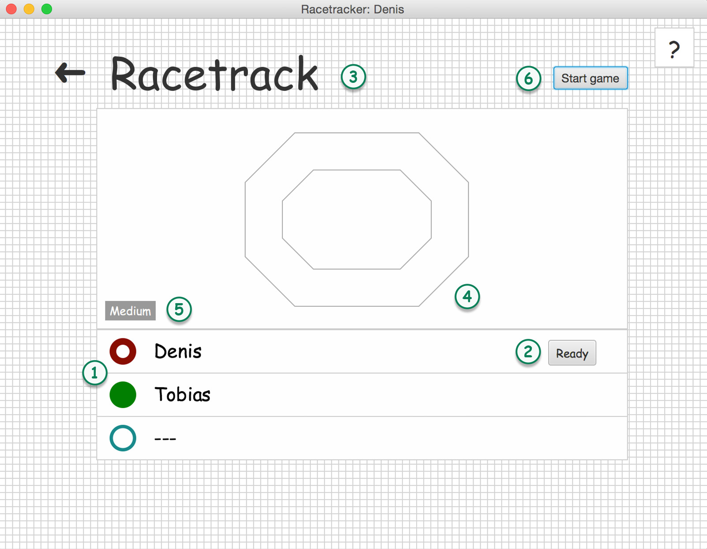

Joining a game
Either by clicking the join button or after creating your own game, this scene will show you the players by name who will play with you in a game.

-
If a player 'is ready to play' his or her circle will be filled. If not, the circle will be half full. If there are empty places those circles will have minimum sized border and two dashes as the name.
-
Press the ready button to indicate your status. This will give the host the option to see who have time to play right now or need some additional time to prepare.
-
The name of the game.
-
A small map preview.
-
The play mode for this game.
-
This button is only visible to the host and gives him or her the ability to start the game at any point. By pressing this button all currently assigned players will be automatically set to 'ready' and the game starts.
The game will start as well, if all currently participating players are ready.
Play modes: There are three different play modes you can play. Those modes are set during the creation of the game.
EASY; forces every player to move within 30 seconds.
MEDIUM; forces every player to move within 10 seconds.
HARD; forces every player to move within 5 seconds.